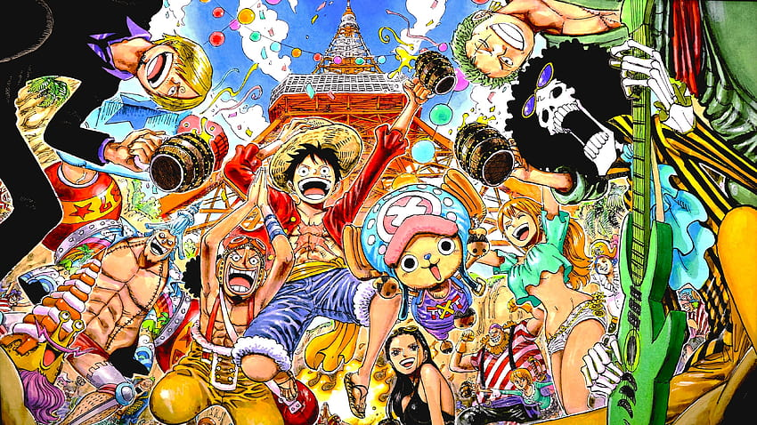

¿Como ver ONE PIECE sin relleno? GUÍA Y LISTA 2024
One Piece tiene un total de 1114 capítulos divididos en 21 temporadas, de esta cantidad, 96 son capítulos de relleno, lo que equivale al 9% del anime. Los capítulos canon son 1018, aunque muchos de ellos contienen escenas extendidas para evitar que la historia del anime alcance a la del manga y se detenga la emisión. El objetivo de ver One Piece sin relleno es reducir el tiempo de vista, ahorrando 1920 minutos, lo que equivale a 32 horas. De esta forma, en vez de 370 horas para ver todo el anime, el tiempo se reduce a 338 horas. Tambien, tendremos en cuenta que los capitulos de relleno no son tan entretenidos y llevaderos como los CANON.
RELLENO
En color Rojo están los episodios relleno. Estos no fueron adaptados del manga, por lo que no es necesario verlos y es mejor evitarlos.
MIXTO
En color Azul están los episodios mixtos. Estos no fueron adaptados parcialmente del manga, por lo que solo vemos los minutos escritos.
CANON
En color Verde están los episodios canon. Estos fueron adaptados del manga, por lo que tenes que verlos obligatoriamente.
TEMPORADA 1: EAST BLUE (DEL CAPITULO 001 AL 61)
La primera temporada cuenta con 61 episodios, los openings usados son We Are! (1-47) y Believe (48-61); los endings son Memories (1-30) y RUN! RUN! RUN! (31-61). ~ Adaptado del manga 1 al 101.
- Romance Dawn
- Ciudad Orange
- Villa Syrup
- Baratie
- Arlong Park
- Aventuras de la Tripulación de Buggy
- Loguetown
- Dragón Milenario
001.(2:05) (1:50) "¡Yo soy Luffy, el próximo rey de los piratas" *Luffy vs. Alvida
002.(2:05) (1:50) "¡Entra el gran espadachín! ¡El Cazador de Piratas Roronoa Zoro!"
003.(3:03) (2:48) "¡Morgan vs Luffy! ¿Quién es esta linda joven?" *Luffy & Zoro vs. Morgan
004.(2:05) (1:50) "El pasado de Luffy! Emerge el "Pelirrojo" Shanks!" *Pasado de Luffy
005.(2:35) (2:20) "Pánico, al poder enigmático! El Capitán Pirata Buggy "El Payaso"!"
006.(2:43) (2:28) "Escenario Desesperado! El Domador de Bestias Mohji VS Luffy!" *Mohji vs. Luffy
007.(2:50) (2:35) "¡Impresionante Combate! ¡Zoro el Espadachín VS Cabaji el Acróbata!" *Zoro vs. Cabaji
008.(2:30) (2:15) "¿Quién será el vencedor? Ajuste de cuentas entre usuarios de Frutas del Diablo!" *Luffy vs .Buggy
009.(2:05) (1:50) "¿Mentiroso honorable? El capitán Usopp"
010.(3:00) (2:45) "¡El individuo más excéntrico del mundo! Jango el hipnotizador"
011.(3:53) (3:38) "¡Descubriendo el complot! El pirata encubierto, capitán Kuro"
012.(2:41) (2:26) "¡Batalla! ¡Los piratas Kuroneko, invasión en la pendiente!"
013.(3:21) (3:06) "¡El dúo estremecedor! Zoro VS los hermanos Nyaban" *Luffy vs. Jango, Zoro vs. hermanos Nyaban
014.(2:50) (2:35) "¡Resurgimiento de Luffy! La señorita Kaya al límite de la vida y la muerte"
015.(3:15) (3:00) "¡Vencer a Kuro! ¡La valentía entre lágrimas de Usopp!" *Luffy vs. Kuro, Zoro vs. Buchi
016.(3:52) (3:37) "¡Resguardar a Kaya! ¡Los piratas de Usopp entra en escena!" *Luffy vs. Kuro
017.(2:28) (2:13) "Plenamente furioso! Kuro VS Luffy, Batalla Final!" *Luffy vs. Kuro, Ussop vs. Jango
018.(2:05) (1:50) "¡Eres una criatura Particular! Gaimon y sus nakamas"
019.(2:05) (1:50) "¡La historia de las tres espadas! ¡El juramento entre Zoro y Kuina!" *Pasado de Zoro
020.(3:00) (2:45) "¡El prestigioso cocinero! Sanji del restaurante flotante"
021.(2:50) (2:35) "¡Un invitado imprevisto! ¡La comida de Sanji y el agradecimiento de Gin!"
022.(2:55) (2:40) "El navío pirata más colosal ¡Capitán Don Krieg!"
023.(3:31) (3:16) "¡Defender al Baratie! ¡El gran pirata, Zeff Pies Rojos!"
024.(2:21) (2:06) "¡Mihawk ojos de halcón! El espadachín Zoro desciende al mar" *Zoro vs. Mihawk
025.(2:39) (2:24) "¡Brotar la magnífica destreza con los pies! ¡Sanji vs. Pearl Muro de Hierro!" *Sanji vs. Pearl
026.(2:08) (1:53) "El anhelo de Zeff y Sanji. All Blue, el mar de ensueño" *Pasado de Sanji
027.(3:15) (3:00) "El perverso individuo de corazón de hielo. Gin, líder de la Flota Pirata" *Sanji vs. Gin
028.(3:42) (3:27) "¡No moriré! Desenlace ¡Luffy vs Krieg!" *Luffy vs. Krieg
029.(3:56) (3:41) "¡Desenlace de una combate letal! ¡La alabarda oculta!" *Luffy vs. Krieg
030.(4:15) (4:00) "¡Partida! ¡El cocinero del mar se hace camarada de Luffy!"
031.(2:05) (1:50) "¡El hombre más vivaracho de East Blue! Arlong el pirata tritón"
032.(2:05) (1:50) "La arpía de la aldea de Cocoyashi. La oficial femenino de Arlong"
033.(2:32) (2:17) "¿¡Usopp fallece!? ¿Todavía falta para la llegada de Luffy?"
034.(3:06) (2:51) "¡Reunidos! Usopp narra la verdadera historia de Nami"
035.(3:15) (3:00) "¡El pasado recóndito! ¡Bellemere la mujer tenáz!" *Pasado de Nami
036.(2:05) (1:50) "¡Sobrevivan! ¡Bellemere, la madre, y familia de Nami!" *Pasado de Nami
037.(4:02) (3:47) "¡Luffy sostente en pie! ¡El final de un juramento incumplido!"
038.(3:17) (3:02) "¡Luffy en aprietos! Tritones VS. Nakamas de Luffy" *Luffy vs. Arlong, Zoro vs. Hachi, Sanji vs. Kuroobi, Usopp vs. Chew
039.(3:25) (3:10) "¡El declive de Luffy! Zoro vs. el octópodo Hatchan" *Zoro vs. Hatchan, Sanji vs. Kuroobi, Usopp vs. Chew
040.(3:15) (3:00) "¡Dignidad de guerreros! Aparatoso combate de Sanji y Usopp" *Sanji vs. Kuroobi, Usopp vs. Chew
041.(4:27) (4:12) "¡Lo sobresaliente de Luffy!
046.(2:05) (1:50) "¡En busca de los Sombrero de Paja! La Gran Travesía de Buggy"
047.(2:53) (2:38) "¡Lo estabais anhelando! ¡El retorno del Capitán Buggy!"
048.(2:05) (1:50) "La localidad del alfa y el omega. Arribo a Loguetown"
049.(3:35) (3:20) "¡Sandai Kitetsu y Yukibashiri! Las recientes espadas de Zoro y la Sargento Mayor"
050.(2:52) (2:37) "Usopp vs. Daddy el padre ¡Arreglo de cuentas al mediodía!"
051.(2:05) (2:10) "¿Una candente contienda culinaria? Sanji vs. la espléndida cocinera"
052.(3:05) (2:50) "¡La represalia de Buggy! ¡El hombre que sonríe en el estrado de ejecución!"
053.(2:58) (2:58) "¡La epopeya ha comenzado! Trayectoria a Grand Line" *Zoro vs. Tashigi, Luffy vs. Smoker
054.(2:43) (2:28) "¡Enfrentando una nueva travesía! La muchacha enigmática, Apis" *Relleno
055.(3:05) (2:50) "¡La divina criatura! El recóndito secreto de Apis y la Isla Legendaria" *Mixto, en este episodio solo vemos el inicio, desde el minuto 2:40 hasta el 7:30, ~ Netflix & Crunchyroll HD: 2:55 al 7:45, aquí Nami explica que es el "Calm Belt", esto si ocurre en el manga pero no está Apis quien es una niña de esta saga de relleno (Lo puedes comprobar en el capítulo 101 del manga).
056.(3:09) (2:54) "¡Expedición de Erik! ¡Gran escape de Isla Gunkan!" *Relleno
057.(2:45) (2:30) "¡Una isla abandonada en medio del océano! La legendaria isla perdida" *Relleno
058.(2:39) (3:24) "¡Combate en las ruinas! ¡Zoro contra Erik bajo la opresión!" *Relleno
059.(3:12) (2:57) "¡Luffy, totalmente acorralado! El plan oculto del Vice Almirante Nelson" *Relleno
060.(2:44) (2:29) "¡Los que ascienden en los cielos despejados! ¡Resurgimiento del mito de 1000 años!" *Relleno
061.(3:50) (3:35) "¡Final desconsolado! ¡Atravesar el Red Line!" *Mixto, en este episodio vemos desde el minuto 13:09 hasta el final, ~ Netflix: 13:09 hasta el final, ~ Crunchyroll HD: 13:23 hasta el final.
TEMPORADA 3: Presentando a Chopper en la Isla de Invierno (078-092)
La tercera temporada cuenta con 15 episodios, el opening usado es Believe (78-92); los endings son Shouchi no suke (78-81) y Before Dawn (82-92). ~ Adaptado del manga 129 al 155.
078.(2:32) (2:17) "¿Nami esta enferma? El lugar donde cae la nieve en el mar"
079.(3:53) (3:38) "¡Artimaña! El Bliking y Wapol el Blik."
080.(3:26) (3:11) "¿Una isla sin doctores? ¡Travesía en el país sin nombre!"
081.(2:55) (2:40) "¿Eres dichoso? ¡La doctora que es considerada bruja!"
082.(3:32) (3:17) "¡La terminación de Dalton! El desembarque de las fuerzas de Wapol"
083.(2:53) (2:38) "¡La isla que está cubierta en la nieve! ¡Arribo a Drum Rockies!"
084.(2:33) (2:18) "¡El reno de hocico azul! El misterio de Chopper" *Pasado de Chopper
085.(2:05) (1:50) "¡El sueño de un facineroso! El curandero Hiruluk" *Pasado de Chopper & Hiruluk
086.(2:05) (1:50) "Los cerezos de Hiruluk y el carácter heredado" *Pasado de Chopper & Hiruluk
087.(2:44) (2:30) "¡VS la guarnición de Wapol! ¡Las habilidades de la Baku Baku no Mi!" *Luffy vs. Wapol
088.(3:58) (3:44) "¡Akuma no Mi de la familia Zoan! Las siete fases de Chopper" *Chopper vs. Chessmarimo
089.(2:39) (2:24) "¡Cuando la opresión del reino acaba! La bandera de la seguridad durará eternamente" *Luffy vs. Wapol
090.(2:05) (1:50) "¡Los cerezos de Hiruluk! El milagro de Drum Rockies"
091.(2:15) (2:00) "¡Despedida de la Isla de Drum! ¡Zarpo al mar!"
092.(2:05) (1:50) "El héroe de Alabasta y la bailarina de a bordo"
TEMPORADA 4: Llegada & Feroces Combates en Arabasta (093-135)
La cuarta temporada cuenta con 38 episodios, los openings usados son Believe (93-115) y Hikari E (116-130); los endings son Before Dawn (93-94), Fish (95-106), Glory ~ Kimi ga iru Kara ~ (107-118) y Shining Ray (119-130). ~ Adaptado del manga 155 al 218.
093.(2:05) (1:50) "¡Rumbo al reino de arena! Un polvo que trae la lluvia y el Ejército Rebelde"
094.(2:55) (2:40) "¡Reunión de poderosos! Su nombre es Ace Puño de Fuego" *Ace vs. Smoker
095.(2:44) (2:29) "¡Ace y Luffy! Recuerdos ardientes en la Arena de la Palabra" *Recuerdos de Ace & Luffy
096.(3:53) (3:38) "¡La traición del villano! ¡El ascenso de Crocodile!"
097.(3:32) (3:17) "¡El cambio de nombre de la ciudad! La lucha final de Crocodile" *Luffy vs. Crocodile
098.(3:58) (3:43) "¡A la cumbre del castillo! La participación de Luffy y la batalla decisiva" *Luffy vs. Crocodile
099.(2:57) (2:42) "¡El camino hacia el desierto! Reencuentro con las tropas de Arabasta" *Reencuentro con las tropas de Arabasta
100.(2:15) (2:00) "¡El regreso de la princesa Vivi! ¡La solución del rey y la rebelión!"
101.(2:32) (2:17) "¡El viaje continúa! ¡Despedida de los amigos y nuevos horizontes!"
102.(3:29) (3:14) "¡La alianza duradera! El poder de los piratas y la promesa eterna"
103.(2:30) (2:15) "¡El retorno de los amigos! Un nuevo comienzo para los Straw Hats"
104.(2:55) (2:40) "¡La promesa final! Un encuentro esperado y el futuro de los Straw Hats"
105.(3:17) (3:03) "¡El inicio de una nueva era! El rumbo hacia el Grand Line continúa"
106.(3:45) (3:30) "¡El secreto del mapa! El enigma de la brújula del tesoro" *Inicio del nuevo arco
107.(2:55) (2:40) "¡El futuro en juego! El mapa perdido y la búsqueda de la verdad"
108.(3:01) (2:46) "¡El desafío inminente! La llegada a la nueva isla de aventura"
109.(3:28) (3:13) "¡La batalla crucial! La decisión de los Straw Hats y la protección del tesoro"
110.(2:58) (2:43) "¡La conclusión del arco! El cierre del desafío y el comienzo de un nuevo viaje"
111.(3:16) (3:01) "¡El legado de la aventura! El retorno a casa y las nuevas alianzas"
112.(2:35) (2:20) "¡El futuro por delante! La preparación para la siguiente gran aventura"
113.(2:30) (2:15) "¡La última promesa! El vínculo inquebrantable entre los Straw Hats"
114.(2:40) (2:25) "¡El desafío final! El enfrentamiento con los nuevos enemigos"
115.(3:00) (2:45) "¡La llegada al nuevo destino! Un capítulo épico se cierra"
116.(3:25) (3:10) "¡El campo de batalla! La lucha de los Straw Hats y sus aliados"
117.(3:35) (3:20) "¡El combate de los gigantes! La estrategia final de los rebeldes"
118.(3:40) (3:25) "¡La conclusión de Arabasta! El resultado de la guerra y el regreso de la paz"
119.(2:58) (2:43) "¡El próximo destino! La planificación del próximo viaje de los Straw Hats"
120.(2:55) (2:40) "¡El futuro prometedor! Nuevas aventuras y desafíos por venir"
121.(3:01) (2:46) "¡La nueva travesía! El inicio de una nueva saga en el mundo de One Piece"
122.(2:35) (2:20) "¡El viaje continúa! Las nuevas aventuras y el crecimiento de los Straw Hats"
123.(3:10) (2:55) "¡La prueba final! La superación de los obstáculos y la llegada a nuevos horizontes"
124.(2:50) (2:35) "¡La victoria asegurada! La celebración de los logros y el camino por recorrer"
125.(3:20) (3:05) "¡El retorno triunfante! La bienvenida de los héroes y el próximo desafío"
126.(2:45) (2:30) "¡El retorno a la aventura! Nuevas promesas y alianzas por forjar"
127.(2:55) (2:40) "¡La estrategia definitiva! La planificación de la próxima gran misión"
128.(3:15) (3:00) "¡El reto inminente! Los preparativos para enfrentar a los nuevos enemigos"
129.(2:55) (2:40) "¡La nueva saga comienza! El inicio de una emocionante aventura"
130.(3:20) (3:05) "¡El camino hacia el futuro! Las promesas de los Straw Hats y su nuevo objetivo"